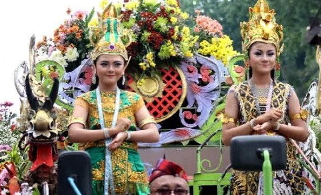
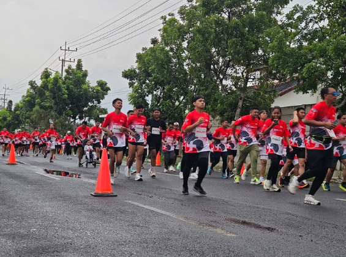
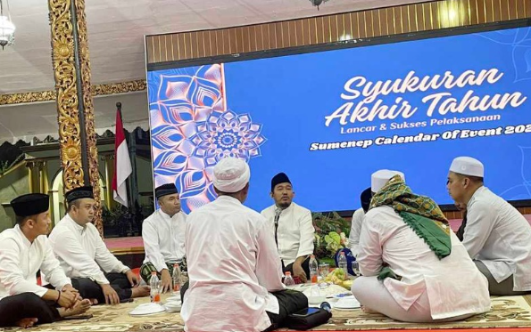

Rona Sumenep adalah media informasi digital yang
menghadirkan berbagai potensi Kabupaten Sumenep
secara menarik, informatif, dan mudah diakses oleh
masyarakat maupun pengunjung. Website ini mengemas
potensi Sumenep melalui tujuh kategori rona, yaitu
Rona Bahari, Rona Alam, Rona Sejarah, Rona Budaya,
Rona Karya, Rona Rasa, dan Rona Religi, sehingga
pengguna dapat mengenal keberagaman Sumenep
berdasarkan karakteristiknya.
Rona Sumenep adalah media informasi digital yang
menghadirkan berbagai potensi Kabupaten Sumenep
secara menarik, informatif, dan mudah diakses oleh
masyarakat maupun pengunjung.
SEJARAH SINGKAT
Jejak Panjang di Tanah Sumenep
Sumenep memiliki sejarah panjang yang erat kaitannya
dengan perkembangan kerajaan di Madura. Perjalanan
sejarahnya meninggalkan beragam bangunan bersejarah,
tradisi, dan warisan budaya yang hingga kini masih
menjadi bagian penting dari identitas masyarakat
Sumenep.
Kabupaten Sumenep terletak di ujung timur Pulau
Madura, Jawa Timur. Wilayahnya terdiri atas daratan
dan kepulauan yang memiliki keindahan alam, potensi
bahari, serta kekayaan budaya yang beragam.
Sumenep dikenal dengan julukan Kota Keris karena
tradisi pembuatan keris yang telah lama berkembang.
Selain itu, Sumenep juga memiliki kearifan lokal,
kesenian, tradisi, serta kuliner khas yang menjadi
bagian dari identitas masyarakatnya.
“Mengenal Sumenep, Menyatu dengan Keberagamannya.”
Dari lautnya yang biru, alamnya yang memesona,
hingga budayanya yang kaya, Rona Sumenep hadir
sebagai jembatan untuk mengenal lebih dekat
potensi dan keindahan Kabupaten Sumenep.
Jejak masa lalu yang membentuk perjalanan dan identitas masyarakat Sumenep hingga hari ini.
KISAH AWAL DAN PERKEMBANGAN KABUPATEN SUMENEP
Warisan Sejarah di Tanah Sumekar
Sumenep merupakan salah satu wilayah bersejarah di Pulau Madura,
Jawa Timur, yang memiliki perjalanan panjang dalam perkembangan
pemerintahan, kebudayaan, dan kehidupan masyarakat. Sejarahnya
dikenal sejak masa pemerintahan Arya Wiraraja pada abad ke-13.
Seiring berjalannya waktu, Sumenep berkembang melalui berbagai
masa kepemimpinan, mulai dari pemerintahan adipati dan kerajaan
hingga menjadi kabupaten seperti sekarang. Perjalanan tersebut
meninggalkan warisan sejarah dan budaya yang menjadi bagian
penting dari identitas masyarakat Sumenep.
Nama Sumenep dipercaya berasal dari kata Songeneb, istilah yang
dalam penjelasan sejarah lokal dikaitkan dengan makna lembah atau
cekungan yang tenang. Nama tersebut juga dikenal dalam Kitab
Pararaton melalui kisah pengangkatan Arya Wiraraja sebagai Adipati
di Madura bagian timur. Peristiwa ini menjadi salah satu tonggak
penting dalam catatan sejarah Sumenep.
Pada 31 Oktober 1269, Arya Wiraraja atau Banyak Wide diangkat
menjadi Adipati Sumenep oleh Raja Kertanegara dari Kerajaan
Singhasari. Pengangkatan tersebut kemudian ditetapkan sebagai
dasar penentuan Hari Jadi Kabupaten Sumenep. Pada masa
kepemimpinannya, Sumenep menjadi salah satu pusat pemerintahan
penting di wilayah Madura bagian timur.
Dalam perjalanan sejarahnya, Sumenep mengalami pergantian dinasti
dan pusat pemerintahan. Pengaruh kerajaan-kerajaan di Jawa,
perkembangan Islam, serta kepemimpinan para adipati dan bangsawan
turut membentuk kehidupan masyarakatnya. Memasuki masa
pemerintahan kolonial, sistem pemerintahan tradisional mengalami
perubahan hingga akhirnya berkembang menjadi pemerintahan
kabupaten. Berbagai peninggalan bangunan, tradisi, dan kebudayaan
hingga kini menjadi bukti perjalanan panjang tersebut.
LINIMASA SEJARAH
Perjalanan Sejarah Kabupaten Sumenep
Perjalanan Sumenep terbentuk melalui berbagai periode
pemerintahan dan perubahan sosial yang berlangsung selama
berabad-abad. Setiap masa menghadirkan tokoh, peristiwa,
serta perkembangan yang turut membentuk karakter Sumenep
hingga saat ini. Berikut beberapa tonggak penting dalam
perjalanan sejarahnya.
1
1269 M – Awal Pemerintahan Arya Wiraraja
Arya Wiraraja diangkat sebagai Adipati Sumenep oleh
Raja Kertanegara dari Singhasari pada 31 Oktober 1269.
Tanggal tersebut kemudian ditetapkan sebagai Hari
Jadi Kabupaten Sumenep.
2
1293 M – Peralihan Kepemimpinan
Setelah membantu Raden Wijaya dalam pendirian
Majapahit, Arya Wiraraja berpindah ke wilayah
Lumajang. Pemerintahan Sumenep kemudian dipercayakan
kepada Arya Bangah.
3
Abad ke-16 – Perkembangan Dinasti Pemerintahan
Sumenep mengalami pergantian kepemimpinan dan
perkembangan dinasti. Pada periode ini, pengaruh
kerajaan-kerajaan di Jawa turut mewarnai sistem
pemerintahan setempat.
4
Abad ke-17 – Pengaruh Mataram dan Perkembangan Islam
Sumenep mengalami perubahan kekuasaan setelah
ekspansi Kerajaan Mataram ke Madura. Periode ini
juga menjadi bagian dari perkembangan tradisi Islam
dan kehidupan masyarakat setempat.
5
1762–1781 M – Perkembangan Arsitektur Keraton
Pada masa Panembahan Somala, dibangun kompleks
Keraton Sumenep dan Masjid Jami' Sumenep.
Pembangunannya menjadi salah satu bukti
perkembangan pemerintahan, agama, dan arsitektur
pada masa tersebut.
6
1883 M – Perubahan Sistem Pemerintahan
Pemerintahan kerajaan di Sumenep secara resmi
berakhir setelah pemerintah kolonial Belanda
menghapus sistem keswaprajaan. Pangeran
Pakunataningrat kemudian diangkat sebagai bupati.
7
1945 M – Masa Kemerdekaan Indonesia
Setelah Proklamasi Kemerdekaan Indonesia,
Sumenep memasuki babak baru sebagai bagian dari
negara Republik Indonesia.
8
Masa Kini – Kabupaten Sumenep
Sumenep berkembang sebagai salah satu kabupaten
di Jawa Timur dengan kekayaan sejarah, budaya,
pariwisata, serta wilayah kepulauan yang menjadi
bagian dari identitas daerahnya.
PENINGGALAN BERSEJARAH
Warisan yang Tetap Hidup
Sejarah panjang Sumenep tidak hanya tersimpan dalam catatan
masa lalu, tetapi juga dapat ditemukan melalui berbagai
bangunan bersejarah dan situs peninggalan leluhur.
Keberadaan peninggalan tersebut menjadi saksi perkembangan
pemerintahan, penyebaran agama, serta kehidupan sosial dan
budaya masyarakat Sumenep dari masa ke masa.
Berikut beberapa peninggalan bersejarah yang menjadi
bagian penting dari warisan budaya Sumenep.
Keraton Sumenep
Keraton Sumenep merupakan peninggalan pemerintahan
kerajaan yang dibangun pada masa Panembahan Somala.
Bangunan ini memiliki perpaduan unsur arsitektur
lokal, Jawa, dan Eropa.
Masjid Jami' Sumenep
Masjid Jami' Sumenep atau Masjid Agung Sumenep
merupakan salah satu bangunan bersejarah yang
didirikan pada masa Panembahan Somala.
Asta Tinggi
Asta Tinggi merupakan kompleks pemakaman para
raja, adipati, dan keluarga bangsawan Sumenep.
Situs ini menjadi bagian dari warisan sejarah
dan arsitektur daerah.
Museum Keraton Sumenep
Museum ini menyimpan berbagai koleksi peninggalan
sejarah yang berkaitan dengan kehidupan kerajaan
dan kebudayaan masyarakat Sumenep.
Labang Mesem
Labang Mesem merupakan gerbang ikonik yang
menjadi bagian dari kompleks Keraton Sumenep
dan memiliki nilai sejarah serta arsitektur.
Mengenal bentang geografis Kabupaten Sumenep
dari kawasan daratan hingga gugusan kepulauannya.
GAMBARAN UMUM
Mengenal Wilayah Kabupaten Sumenep
Kabupaten Sumenep merupakan wilayah yang terletak
di ujung timur Pulau Madura, Provinsi Jawa Timur.
Memiliki karakteristik geografis yang unik, Sumenep
terdiri atas kawasan daratan dan kepulauan yang
membentang hingga Laut Jawa dan Laut Flores.
Secara administratif, Kabupaten Sumenep terbagi
menjadi 27 kecamatan dengan luas wilayah sekitar
2.093,50 km².
Sumenep memiliki 126 pulau yang membentuk gugusan
kepulauan dengan karakteristik alam dan kehidupan
masyarakat yang beragam. Dari jumlah tersebut,
sebanyak 48 pulau berpenghuni dan 78 pulau tidak
berpenghuni. Keberagaman wilayah ini menjadikan
Sumenep memiliki potensi alam, bahari, serta
kekayaan budaya yang tersebar dari kawasan daratan
hingga pulau-pulau terluarnya.
Secara geografis, Kabupaten Sumenep berada pada koordinat
113°32'–116°16' Bujur Timur dan 4°55'–7°24' Lintang Selatan.
Adapun batas-batas wilayahnya meliputi:
Utara: Laut Jawa.
Selatan: Selat Madura.
Barat: Kabupaten Pamekasan.
Timur: Laut Jawa dan Laut Flores.
▤
2.093,50km²
Luas Wilayah Kabupaten
♙
27
Jumlah Kecamatan
◎
2
Bagian Wilayah
Daratan dan Kepulauan
⌂
126
Jumlah Pulau Keseluruhan
♧
48
Pulau Berpenghuni
♧
78
Pulau Tidak Berpenghuni
DATA GEOGRAFIS
Peta Administrasi Kabupaten Sumenep
Kenali persebaran wilayah Kabupaten Sumenep melalui
peta administrasi yang menampilkan pembagian kecamatan,
kawasan daratan, serta gugusan pulau-pulau di sekitarnya.
Peta ini memberikan gambaran mengenai letak dan batas
setiap wilayah, sekaligus membantu pengunjung memahami
luasnya cakupan geografis Kabupaten Sumenep.
WILAYAH-WILAYAH SUMENEP
Pembagian Wilayah Kabupaten Sumenep
Kabupaten Sumenep terbagi menjadi dua kawasan utama,
yaitu wilayah daratan dan wilayah kepulauan.
Keduanya memiliki karakteristik geografis, potensi alam,
serta kehidupan masyarakat yang berbeda. Pembagian
wilayah ini mencakup 27 kecamatan yang tersebar di
berbagai kawasan Kabupaten Sumenep.
Wilayah Daratan
Wilayah daratan merupakan bagian Kabupaten
Sumenep yang berada di Pulau Madura.
Kawasan ini mencakup 18 kecamatan dengan
karakteristik wilayah yang beragam.
Daftar 18 Kecamatan Daratan:
Pragaan
Bluto
Saronggi
Kota Sumenep
Batuan
Lenteng
Ganding
Guluk-Guluk
Pasongsongan
Ambunten
Rubaru
Dasuk
Manding
Batuputih
Gapura
Batang-Batang
Dungkek
Kalianget
Wilayah Kepulauan
Wilayah kepulauan merupakan bagian Kabupaten
Sumenep yang terdiri atas gugusan pulau-pulau
di sekitar Laut Jawa dan Laut Flores. Kawasan
ini mencakup 9 kecamatan kepulauan dengan
karakteristik alam dan kehidupan masyarakat
pesisir yang beragam.
Karakter, budaya, dan nilai yang menjadi jati diri masyarakat Sumenep.
JATI DIRI KABUPATEN SUMENEP
Mengenal Jati Diri Kabupaten Sumenep
Kabupaten Sumenep merupakan daerah yang memiliki identitas
kuat melalui perpaduan sejarah, budaya, tradisi, dan kehidupan
masyarakatnya. Berada di ujung timur Pulau Madura, Sumenep
dikenal sebagai wilayah yang menyimpan warisan kerajaan,
kekayaan seni dan budaya, serta keindahan alam daratan dan
kepulauan. Seluruh kekayaan tersebut membentuk karakter
Sumenep sebagai daerah yang menjunjung tinggi nilai tradisi
sekaligus terus berkembang mengikuti perubahan zaman.
Jati diri Sumenep tercermin melalui sejarah panjang
pemerintahan kerajaan, peninggalan budaya, serta tradisi
yang masih dijaga hingga saat ini. Identitas tersebut juga
diperkuat melalui lambang daerah, semboyan Sumekar, dan
berbagai kekayaan lokal yang menjadi kebanggaan masyarakat.
Lambang Kabupaten Sumenep
Lambang Kabupaten Sumenep berbentuk perisai berwarna
hijau dengan gambar kuda terbang bersayap berwarna
kuning keemasan yang menghadap ke kiri. Pada bagian
bawahnya terdapat pita bertuliskan Sumekar.
Lambang ini menjadi simbol identitas resmi daerah
yang merepresentasikan semangat, kebanggaan, dan
nilai-nilai sejarah Kabupaten Sumenep.
“SUMEKAR”
Sumenep Karaton
Sumekar merupakan semboyan Kabupaten Sumenep yang
berasal dari akronim Sumenep Karaton. Semboyan ini
mencerminkan hubungan erat Sumenep dengan sejarah
pemerintahan kerajaan dan keberadaan keraton sebagai
pusat kekuasaan para adipati pada masa lampau.
Sumekar menjadi pengingat akan kejayaan sejarah
sekaligus identitas budaya yang diwariskan dari
generasi ke generasi.
Makna Semboyan Sumekar:
Sejarah:
Menggambarkan perjalanan panjang pemerintahan
dan kerajaan Sumenep.
Kebudayaan:
Mencerminkan kekayaan tradisi dan warisan leluhur.
Kebanggaan:
Menjadi simbol identitas dan rasa memiliki
masyarakat terhadap daerahnya.
NILAI DAN KARAKTER MASYARAKAT
Karakter Masyarakat Sumenep
Masyarakat Sumenep dikenal memiliki kehidupan sosial
yang erat dengan nilai-nilai keagamaan, kesopanan,
kebersamaan, dan penghormatan terhadap tradisi.
Nilai-nilai tersebut tumbuh melalui kehidupan keluarga,
lingkungan sosial, serta budaya lokal yang diwariskan
secara turun-temurun. Karakter masyarakat ini menjadi
bagian penting dalam membangun identitas Sumenep
sebagai daerah yang kaya akan kearifan lokal.
Berikut empat nilai karakter yang dapat ditonjolkan
dalam identitas masyarakat Sumenep:
Religius
Kehidupan masyarakat Sumenep memiliki keterkaitan
erat dengan nilai-nilai keagamaan. Hal ini
tercermin melalui keberadaan pesantren, masjid,
kegiatan keagamaan, serta tradisi masyarakat
yang menjunjung tinggi ajaran agama dalam
kehidupan sehari-hari.
Ramah dan Santun
Keramahan dan tata krama menjadi bagian dari
kehidupan sosial masyarakat Sumenep. Sikap
menghormati orang lain, menjaga kesopanan,
serta menyambut tamu dengan baik merupakan
nilai yang dijunjung dalam budaya masyarakat
setempat.
Tangguh dan Gotong Royong
Masyarakat Sumenep memiliki semangat
kebersamaan dalam menghadapi berbagai
tantangan kehidupan. Kehidupan masyarakat
pesisir, petani, dan penduduk kepulauan turut
memperlihatkan nilai kerja keras, ketekunan,
serta gotong royong dalam menjaga lingkungan
dan memenuhi kebutuhan hidup.
Kreatif dan Berbudaya
Kreativitas masyarakat Sumenep tercermin melalui
perkembangan kerajinan lokal, seni pertunjukan,
batik, kuliner tradisional, serta berbagai
produk budaya. Kekayaan tersebut mengembangkan
warisan lokal menjadi karya bernilai ekonomi
sekaligus menunjukkan potensi kreativitas
masyarakat dalam mengikuti perkembangan zaman.
POTENSI UNGGULAN KABUPATEN SUMENEP
Kekayaan Potensi dan Keunggulan Sumenep
Kabupaten Sumenep memiliki beragam potensi unggulan
yang berasal dari kekayaan alam, budaya, serta aktivitas
ekonomi masyarakatnya. Wilayah daratan dan kepulauan
memberikan peluang pengembangan berbagai sektor,
mulai dari pariwisata, perikanan, pertanian, hingga
industri kreatif. Keberagaman potensi tersebut menjadi
kekuatan dalam mendukung pembangunan dan memperkenalkan
Sumenep kepada masyarakat luas.
Pariwisata Bahari
Sumenep memiliki kekayaan wisata bahari berupa
pantai, pulau-pulau kecil, dan keindahan bawah laut.
Budaya dan Sejarah
Warisan kerajaan, bangunan bersejarah, seni
pertunjukan, serta tradisi lokal menjadi
kekayaan budaya Sumenep.
Kerajinan dan Ekraf
Sumenep memiliki potensi kerajinan lokal,
seperti batik tulis, ukiran, dan kerajinan
tradisional.
Pertanian dan Garam
Sektor pertanian dan produksi garam menjadi
bagian dari kegiatan ekonomi masyarakat Sumenep.
Perikanan dan Kelautan
Aktivitas penangkapan ikan, hasil laut,
serta budidaya perikanan menjadi bagian
dalam perekonomian masyarakat pesisir
dan kepulauan.
Kuliner Khas Daerah
Kuliner seperti kaldu kokot, campor, dan soto
Madura menjadi bagian dari kekayaan gastronomi
yang menarik untuk dikenalkan kepada wisatawan.
Menjelajahi tujuh warna potensi Kabupaten
Sumenep yang kaya akan alam, budaya,
sejarah, dan kearifan lokal.
JELAJAHI RONA SUMENEP
Temukan Keberagaman Potensi Sumenep
Rona Sumenep menghadirkan tujuh kategori utama
yang menggambarkan kekayaan Kabupaten Sumenep,
mulai dari keindahan alam, laut, sejarah, budaya,
karya, rasa, hingga religi.
Jelajahi setiap sudut Sumenep dan temukan
cerita unik di balik setiap ronanya. Dari
keindahan alam hingga kearifan lokal,
semuanya ada di sini.
EVENT
Jelajahi Berbagai
Event di Sumenep
Dari festival budaya, pertunjukan seni, hingga
kegiatan khas daerah, temukan beragam event
menarik yang menjadi bagian dari kehidupan
masyarakat Sumenep.
EVENT MENDATANG
Jadwal Event Terbaru
Jangan lewatkan berbagai event menarik
yang akan segera berlangsung di Sumenep.
✿ Karya
Pameran Keris 2026
▦ 02 Oktober 2026
Kompleks Keraton Sumenep
Pameran Keris 2026 menghadirkan beragam koleksi keris sebagai warisan budaya dan simbol identitas masyarakat Sumenep. Kegiatan ini menjadi ruang untuk mengenal nilai sejarah, filosofi, serta seni kriya keris yang diwariskan secara turun-temurun.
♟ Budaya
Kerapan Kerbau Kangean
▦ 04 Oktober 2026
Pulau Kangean, Kabupaten Sumenep
Kerapan Kerbau Kangean merupakan tradisi perlombaan kerbau khas Kepulauan Kangean yang mencerminkan semangat, ketangkasan, dan kebersamaan masyarakat setempat. Tradisi ini menjadi bagian dari warisan budaya lokal yang terus dilestarikan sebagai identitas dan kebanggaan masyarakat Kangean.
♟ Budaya
Festival Semalam di Madura
▦ 10 Oktober 2026
Depan Gerbang Masjid Jamik Sumenep
Festival Semalam di Madura merupakan perayaan seni dan budaya yang menghadirkan beragam pertunjukan tradisional, musik, serta kreativitas lokal dalam satu rangkaian acara. Kegiatan ini menjadi wadah untuk memperkenalkan kekayaan budaya Madura sekaligus mempererat kebersamaan masyarakat dalam melestarikan warisan daerah.
♟ Budaya
Kerapan Sapi Piala Presiden
▦ 11 Oktober 2026
Stadion Giling Sumenep
Karapan Sapi Piala Presiden merupakan ajang perlombaan tradisional khas Madura yang menampilkan ketangkasan sapi dan keterampilan para joki. Kegiatan ini menjadi bagian dari pelestarian budaya sekaligus wujud kebanggaan masyarakat terhadap tradisi leluhur.
♟ Budaya
Festival Musik Tong Tong
▦ 17 Oktober 2026
Jl. Halim Perdana Kusuma - Taman Adipura
Festival Musik Tong Tong merupakan perayaan musik tradisional khas Madura yang menampilkan perpaduan irama tabuhan tong-tong, alat musik tradisional, dan kreativitas seni masyarakat. Festival ini menjadi ajang pelestarian budaya sekaligus memperkenalkan kekayaan musik tradisional Sumenep kepada generasi muda dan wisatawan.
♟ Budaya
Peringatan Hari Santri Nasional
▦ 22 Oktober 2026
Labang Mesem, Kabupaten Sumenep
Peringatan Hari Santri Nasional merupakan momentum untuk mengenang perjuangan dan kontribusi para santri serta ulama dalam menjaga nilai-nilai keagamaan dan memperjuangkan kemerdekaan Indonesia. Kegiatan ini menjadi bentuk penghargaan terhadap peran pesantren dalam membangun generasi yang religius, berilmu, dan berakhlak mulia.
♟ Budaya
Madura Ayam Bekisar Contest
▦ 25 Oktober 2026
Halaman Kantor Bupati Sumenep
Madura Ayam Bekisar Contest merupakan ajang kontes ayam bekisar yang menampilkan keindahan bentuk, keunikan suara, dan kualitas ayam hasil persilangan khas Madura. Kegiatan ini menjadi wadah bagi para penghobi dan peternak untuk memperkenalkan serta melestarikan ayam bekisar sebagai salah satu kekayaan fauna dan budaya lokal.
♙ Sejarah
Haul Raja-Raja Madura 757
▦ 27 Oktober 2026
Masjid Jami' Sumenep
Haul Raja-Raja Madura 757 merupakan kegiatan peringatan untuk mengenang jasa dan perjuangan para raja serta tokoh leluhur Madura dalam perjalanan sejarah daerah. Kegiatan ini menjadi bentuk penghormatan terhadap warisan sejarah, nilai kepemimpinan, dan tradisi yang terus dijaga oleh masyarakat Sumenep.
♙ Sejarah
Prosesi Arya Wiraraja 757
▦ 31 Oktober 2026
Kompleks Keraton Sumenep
Prosesi Arya Wiraraja Sumenep 757 merupakan kegiatan budaya yang mengenang sosok Arya Wiraraja sebagai tokoh penting dalam sejarah awal pemerintahan Sumenep. Prosesi ini menjadi wujud penghormatan terhadap jasa leluhur sekaligus upaya melestarikan nilai sejarah dan budaya daerah.
♟ Budaya
Petik Laut Desa Lobuk
▦ 01 November 2026
Desa Lobuk, Kec. Bluto, Kabupaten Sumenep
Petik Laut Desa Lobuk merupakan tradisi masyarakat pesisir sebagai ungkapan rasa syukur atas limpahan hasil laut dan rezeki yang diberikan oleh Tuhan. Kegiatan ini menjadi wujud pelestarian budaya maritim yang diwariskan secara turun-temurun sekaligus mempererat kebersamaan masyarakat nelayan Desa Lobuk.
✿ Karya
Festival Dongeng Madura
▦ 05 November 2026
Lapangan Tenis Indoor GOR A. Yani Sumenep
Festival Dongeng Madura merupakan kegiatan seni dan budaya yang menghadirkan berbagai cerita rakyat serta kisah-kisah tradisional Madura melalui pertunjukan mendongeng. Festival ini menjadi wadah pelestarian sastra lisan sekaligus memperkenalkan nilai-nilai kearifan lokal kepada generasi muda.

♟ Budaya
FESTAPORA:Festival Budaya Pesisir Utara
▦ 05 November 2026
Kecamatan Dasuk, Kabupaten Sumenep
FESTAPORA (Festival Budaya Pesisir Utara) merupakan perayaan yang menampilkan kekayaan seni, tradisi, dan potensi budaya masyarakat pesisir utara Sumenep. Kegiatan ini menjadi wadah untuk melestarikan kearifan lokal sekaligus memperkenalkan identitas budaya pesisir kepada masyarakat luas.
♟ Budaya
Festival Kucing Busok Raas
▦ 06 November 2026
Balai Kecamatan Ra’as, Kabupaten Sumenep
Festival Kucing Busok Raas merupakan perayaan yang memperkenalkan kucing Busok, ras kucing lokal khas Pulau Raas, sebagai salah satu kekayaan fauna Kabupaten Sumenep. Kegiatan ini menjadi sarana pelestarian dan pengenalan keunikan kucing Busok sekaligus memperkuat kebanggaan masyarakat terhadap identitas lokal daerah.
✿ Karya
Ajang Pemilihan Putri Nusantara Jawa Timur 2026
▦ 07 November 2026
Gedung Korpri Kabupaten Sumenep
Ajang Pemilihan Putri Nusantara Jawa Timur 2026 merupakan kegiatan pencarian generasi muda perempuan yang memiliki wawasan, kreativitas, dan kepedulian terhadap budaya serta pariwisata daerah. Ajang ini menjadi wadah pengembangan potensi diri sekaligus memperkenalkan kekayaan budaya dan identitas Jawa Timur ke tingkat yang lebih luas.
♟ Budaya
Ambunten Seafood Festival 2026
▦ 08 November 2026
Lapangan Desa Ambunten, Kec. Ambunten, Kabupaten Sumenep
Ambunten Seafood Festival 2026 merupakan perayaan kuliner pesisir yang menampilkan beragam olahan hasil laut khas Ambunten. Kegiatan ini menjadi wadah untuk memperkenalkan kekayaan kuliner bahari sekaligus mengangkat potensi perikanan dan budaya masyarakat pesisir Sumenep.
♟ Budaya
Festival Saebu Topeng Kabupaten Sumenep
▦ 15 November 2026
Kawasan Keraton Sumenep
Festival Saebu Topeng Kabupaten Sumenep merupakan perayaan seni dan budaya yang menampilkan keunikan topeng tradisional sebagai bagian dari warisan kesenian masyarakat Madura. Kegiatan ini menjadi wadah pelestarian seni pertunjukan sekaligus memperkenalkan kekayaan budaya dan kreativitas seniman lokal kepada masyarakat luas.

✿ Karya
Sumenep Run 2026 (Sunrun 2026)
▦ 06 Desember 2026
Depan Kantor Dinas Pekerjaan Umum dan Tata Ruang (PUTR)
Sumenep Run (Sunrun 2026) merupakan ajang olahraga lari yang mengajak masyarakat dan wisatawan untuk berpartisipasi dalam kegiatan aktif dan penuh semangat. Kegiatan ini menjadi sarana untuk mempromosikan gaya hidup sehat sekaligus memperkenalkan potensi wisata dan keindahan Kabupaten Sumenep.

♟ Budaya
Syukuran Akhir Tahun
▦ 20 Desember 2026
Pendopo Agung Keraton Sumenep
Syukuran Akhir Tahun merupakan kegiatan ungkapan rasa syukur atas perjalanan dan pencapaian yang telah dilalui sepanjang tahun. Kegiatan ini menjadi momentum untuk mempererat kebersamaan, melakukan refleksi, serta menyambut tahun baru dengan harapan dan semangat yang lebih baik.
INFO
Informasi Wisata
Rona Sumenep
Temukan berbagai informasi penting untuk
mempermudah perjalanan dan pengalaman wisata
Anda di Kabupaten Sumenep.
PILIHAN INFORMASI
Panduan Lengkap untuk Perjalanan Anda
Akses peta, informasi transportasi, dan
pertanyaan yang sering diajukan seputar
wisata di Sumenep.
Peta Sumenep
Jelajahi lokasi destinasi wisata,
fasilitas umum, dan rute perjalanan
di Kabupaten Sumenep melalui peta
interaktif kami.
Kenali berbagai pilihan transportasi menuju
dan di dalam wilayah Sumenep untuk membantu
Anda merencanakan perjalanan serta menjelajahi
beragam destinasi di Bumi Sumekar.
PILIHAN TRANSPORTASI
Perjalanan Menuju Sumenep
Akses ke Sumenep dapat ditempuh melalui
jalur darat, laut, dan udara. Berikut
beberapa pilihan transportasi yang tersedia.
Kapal Laut
Tersedia pelabuhan Kalianget dan
pelabuhan Tanjung untuk rute dari
dan menuju wilayah kepulauan,
serta sejumlah kota lainnya.
Pesawat
Bandara Trunojoyo Madura (dekat
Sumenep) melayani penerbangan dari
beberapa kota besar di Indonesia.
Bus & Travel
Tersedia bus antar kota dengan
rute Surabaya, Madura, dan kota
lainnya menuju Kabupaten Sumenep.
Transportasi di Dalam Sumenep
Untuk menjelajahi objek wisata di dalam kabupaten,
Anda dapat menggunakan berbagai pilihan transportasi berikut.
Mobil / Sewa Mobil
Nyaman untuk perjalanan keluarga
maupun rombongan yang ingin
menjelajahi berbagai destinasi.
Motor / Sewa Motor
Cocok untuk perjalanan lebih
fleksibel dan hemat saat
menjelajahi wilayah Sumenep.
Ojek & Taksi Online
Tersedia di area tertentu untuk
membantu perjalanan di sekitar
pusat kota dan sekitarnya.
Temukan berbagai informasi seputar perjalanan,
wisata, dan fasilitas di Kabupaten Sumenep
melalui jawaban atas pertanyaan yang sering
diajukan sebelum berkunjung ke Bumi Sumekar.
PERTANYAAN UMUM
Hal yang Perlu Anda Ketahui
Masih memiliki pertanyaan sebelum berkunjung
ke Sumenep? Temukan informasi yang mungkin
Anda butuhkan melalui daftar pertanyaan berikut.
Waktu yang nyaman untuk berkunjung umumnya
adalah saat musim kemarau, ketika cuaca
cenderung lebih cerah sehingga kegiatan
wisata alam dan pantai dapat dilakukan
dengan lebih leluasa. Tetap perhatikan
prakiraan cuaca sebelum melakukan perjalanan.
Perjalanan dari Surabaya menuju Sumenep
dapat dilakukan melalui jalur darat
menggunakan kendaraan pribadi, bus,
atau travel. Perjalanan umumnya melewati
Jembatan Suramadu dan wilayah Kabupaten
Bangkalan serta Pamekasan sebelum tiba
di Sumenep.
Tersedia berbagai pilihan penginapan,
seperti hotel, homestay, dan penginapan
lokal di beberapa kawasan wisata maupun
pusat kota. Sebaiknya periksa lokasi,
fasilitas, dan ketersediaan kamar sebelum
melakukan pemesanan.
Biaya masuk berbeda-beda, bergantung
pada destinasi wisata yang dikunjungi.
Beberapa tempat memiliki tiket masuk,
sedangkan tempat lainnya dapat dikunjungi
tanpa biaya tiket. Periksa informasi
terbaru dari pengelola sebelum berangkat.
Pilihan transportasi di Sumenep meliputi
kendaraan umum pada rute tertentu,
ojek, serta layanan kendaraan sewa.
Untuk menuju lokasi wisata yang jauh
dari pusat kota, Anda dapat mempertimbangkan
menyewa kendaraan.
Sumenep memiliki beragam oleh-oleh khas,
seperti keris dan kerajinan lokal,
batik Sumenep, makanan tradisional,
serta produk olahan hasil laut.
Pilihan oleh-oleh dapat ditemukan
di pusat oleh-oleh dan toko setempat.
Wisatawan dapat menikmati perjalanan
dengan tetap memperhatikan keselamatan.
Patuhi aturan di setiap destinasi,
jaga barang bawaan, perhatikan kondisi
cuaca, dan ikuti arahan pengelola,
khususnya saat mengunjungi kawasan pantai
maupun pulau-pulau kecil.
Akses internet dan jaringan seluler
tersedia di banyak kawasan permukiman
dan pusat kota. Namun, kualitas sinyal
dapat berbeda di beberapa wilayah,
terutama pada daerah kepulauan dan
lokasi wisata yang cukup terpencil.
Pemandu wisata dapat ditemukan melalui
penyedia jasa wisata atau pengelola
destinasi tertentu. Untuk perjalanan
ke kawasan budaya, sejarah, maupun
kepulauan, Anda dapat mencari informasi
pemandu terlebih dahulu sebelum berkunjung.
Tentu. Sumenep dapat dikunjungi bersama
keluarga, teman, maupun rombongan.
Anda dapat merencanakan perjalanan
menggunakan kendaraan sewa atau
transportasi rombongan. Untuk wisata
kepulauan, sebaiknya atur transportasi
laut dan jadwal perjalanan terlebih dahulu.

 Kenali potensi Sumenep melalui berbagai kategorinya
Kenali potensi Sumenep melalui berbagai kategorinya